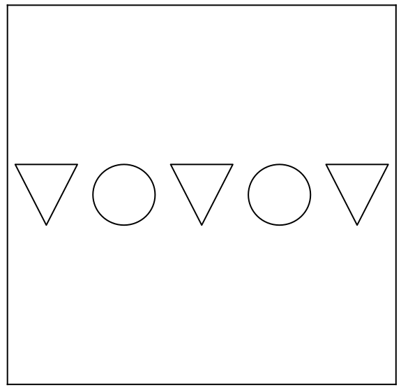

<!DOCTYPE html>
<html>
  <head>
    <title>My experiment</title>
    <script src="jspsych-6.3.1/jspsych.js"></script>
    <script src="jspsych-6.3.1/plugins/jspsych-html-keyboard-response.js"></script>
    <script src="jspsych-6.3.1/plugins/jspsych-html-slider-response.js"></script>
    <script src="jspsych-6.3.1/plugins/jspsych-preload.js"></script>
    <link href="jspsych-6.3.1/css/jspsych.css" rel="stylesheet" type="text/css">
  </head>
  <body></body>
  <script>

    /* create timeline */
    var timeline = [];

    /* preload images */
    var preload = {
      type: 'preload',
      images: ['img/A.svg', 'img/B.svg', 'img/C.svg', 'img/D.svg', 'img/T.svg']
    }
    timeline.push(preload);

    /* define welcome message trial */
    var welcome = {
      type: "html-keyboard-response",
      stimulus: "Welcome to the experiment. Press any key to begin."
    };
    timeline.push(welcome);

    /* define instructions trial */
    var instructions = {
      type: "html-keyboard-response",
      stimulus: `
        <p>In this experiment, two stimuli will appear in the center 
        of the screen. </p>

        <p>Drag the slider to indicate how similar the 
        stimuli are. </p>
    
        <p>Press any key to continue.</p>
      `,
      post_trial_gap: 500
    };
    timeline.push(instructions);

    /* test trials */
    var test_stimuli = [
      { stimulus: "img/A.svg"},
      { stimulus: "img/B.svg"},
      { stimulus: "img/C.svg"},
      { stimulus: "img/D.svg"}
    ];

    var fixation = {
      type: 'html-keyboard-response',
      stimulus: '<div style="font-size:120px;">+</div>',
      choices: jsPsych.NO_KEYS,
      trial_duration: function(){
        return jsPsych.randomization.sampleWithoutReplacement([250, 500, 750, 1000, 1250, 1500, 1750, 2000], 1)[0];
      },
      data: {
        task: 'fixation'
      }
    }

    var test = {
      type: "html-slider-response",
      stimulus: function(){
                var html = `
                <p></p>
                <div style='float: center;'></img></img></div>
                <p></p>`;
                return html;
            },  
      min: 1,
      max: 5,
      slider_start: 3,
      slider_width: 500,
      labels: [`Not similar`, `2`, `3`, `4`, `Very similar`],
      prompt: `<p>How similar are these stimuli?</p>`,
      require_movement: true,
      data: {
        task: 'response'
      }
    }

    var test_procedure = {
      timeline: [fixation, test],
      timeline_variables: test_stimuli,
      repetitions: 1,
      randomize_order: true
    }
    timeline.push(test_procedure);

    /* start the experiment */
    jsPsych.init({
      timeline: timeline,
      on_finish: function() {
        jsPsych.data.displayData();
      }
    });
  </script>
</html>